The first 4 films focus on LGBT stories - in particular, films about women. The first, Blue Is the Warmest Color, is about the relationship between a French teenager and an aspiring artist. Next, Carol is about an affair between a female photographer and an older woman going through a divorce. The third film, Tangerine, follows the story of a transgender sex worker who finds out her boyfriend has been cheating on her. Finally, Portrait of a Lady on Fire portrays the relationship between an aristocrat and the woman hired to paint her portrait in 18th century France.
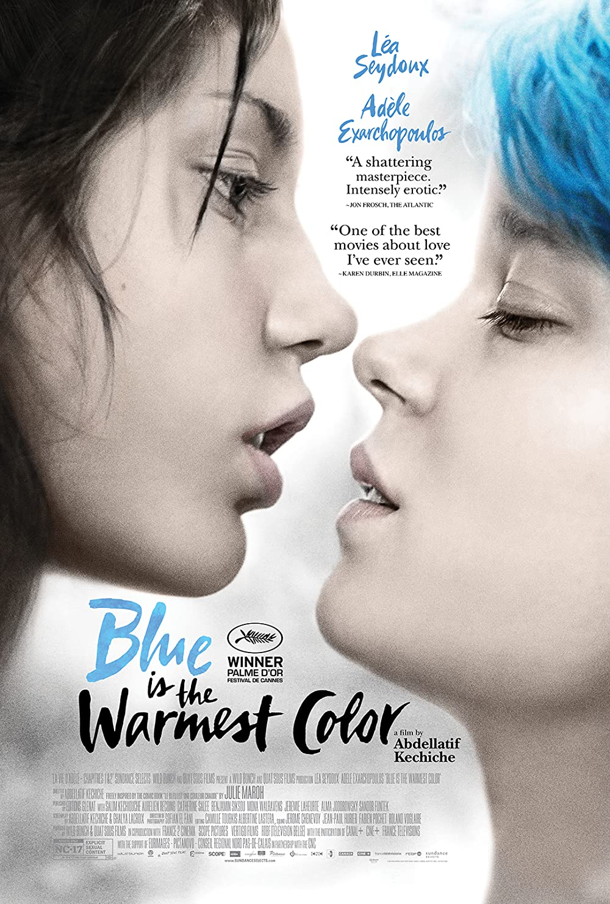 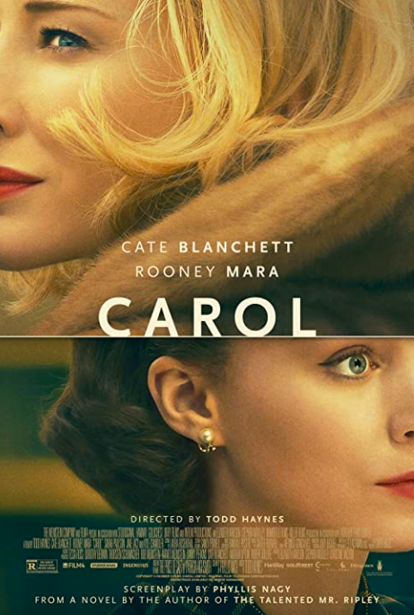 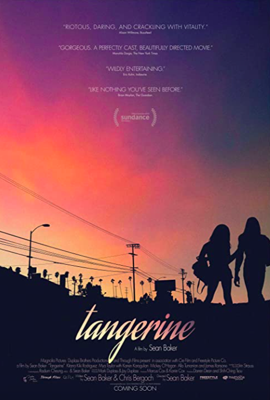 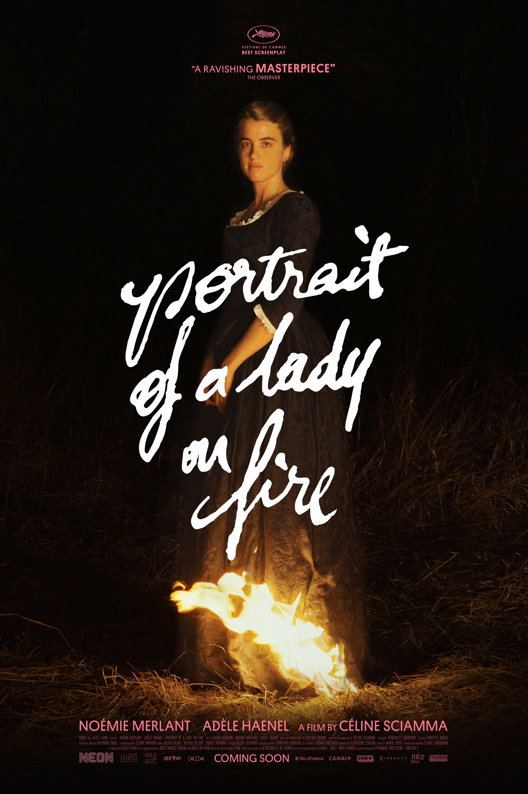
The next 5 films focus on LGBT stories - in particular, films about men. First, Call Me By Your Name is about the relationship between a teenager and a visiting graduate student during one summer in Italy. Next, My Own Private Idaho portrays the trials and tribulations of two hustlers embarking on a journey of adventure, personal discovery, and love. Then, Boy Erased is the story of a son of a preacher who is forced to join a gay conversion program after being outed by his parents. The next film, A Single Man, depicts a day in the life of a professor trying to cope with the death of his boyfriend. Finally, Beginners is a movie about a young man coming to terms with his father coming out as a gay man after years of marriage, as well as a recent cancer diagnosis.
 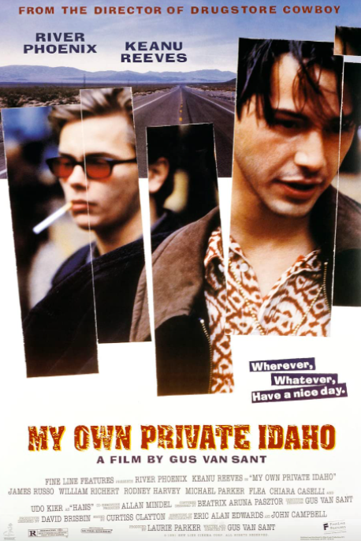
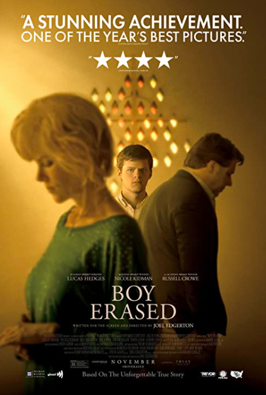
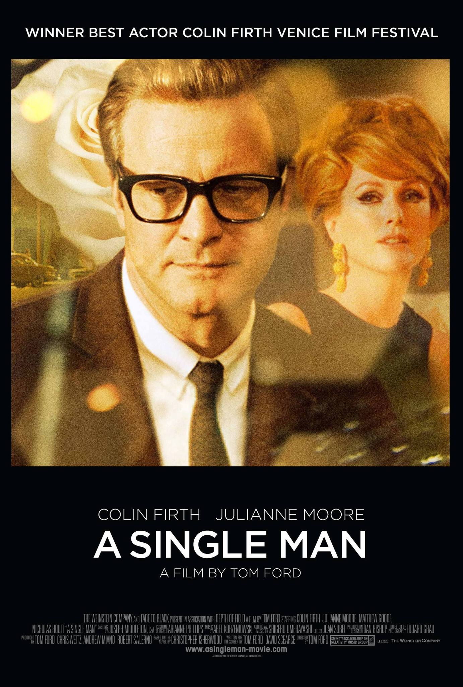
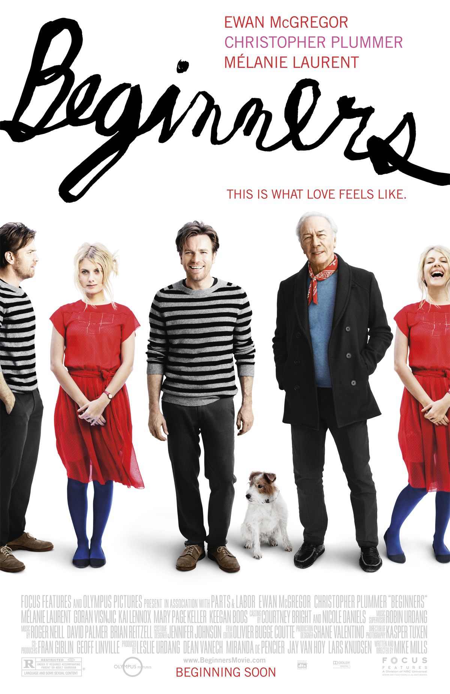
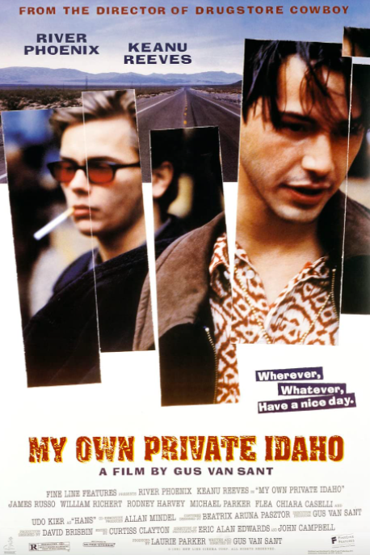
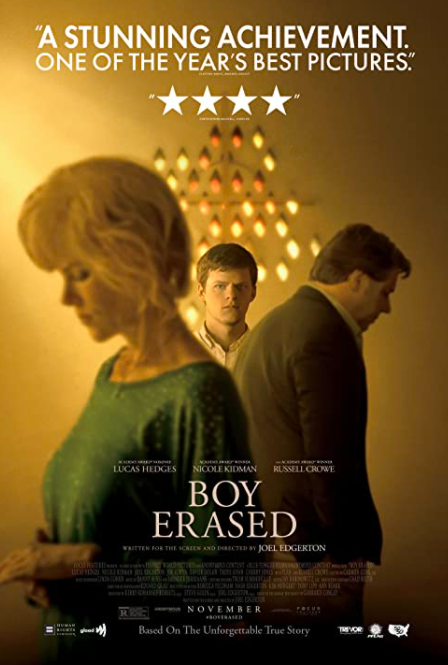
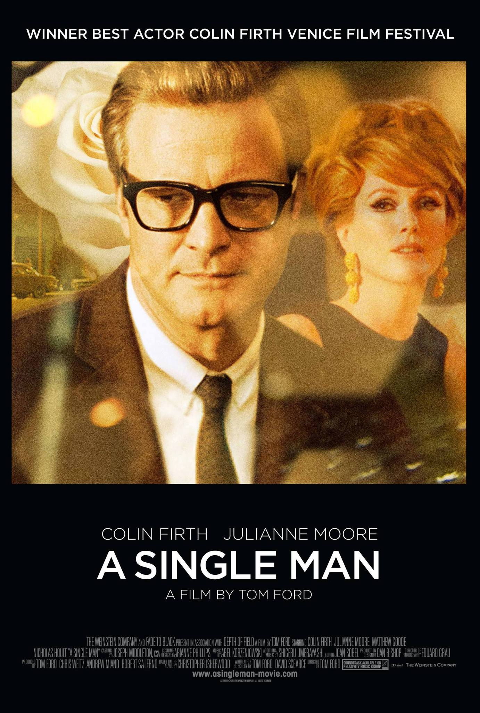
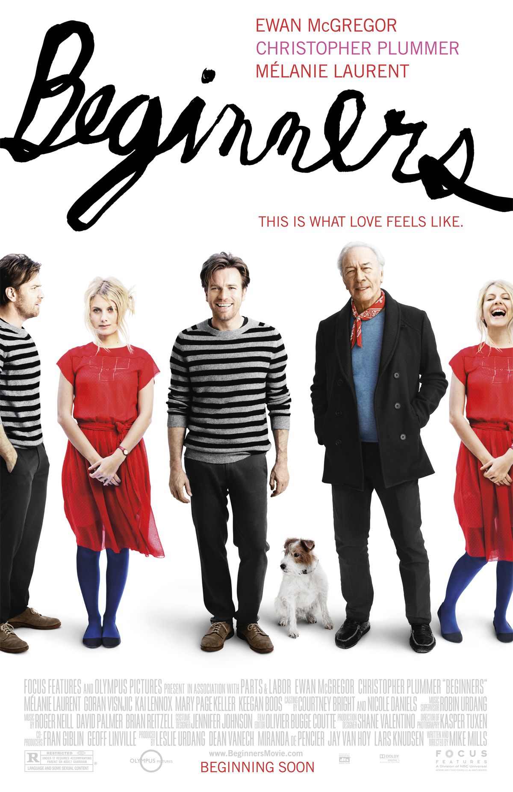